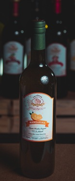
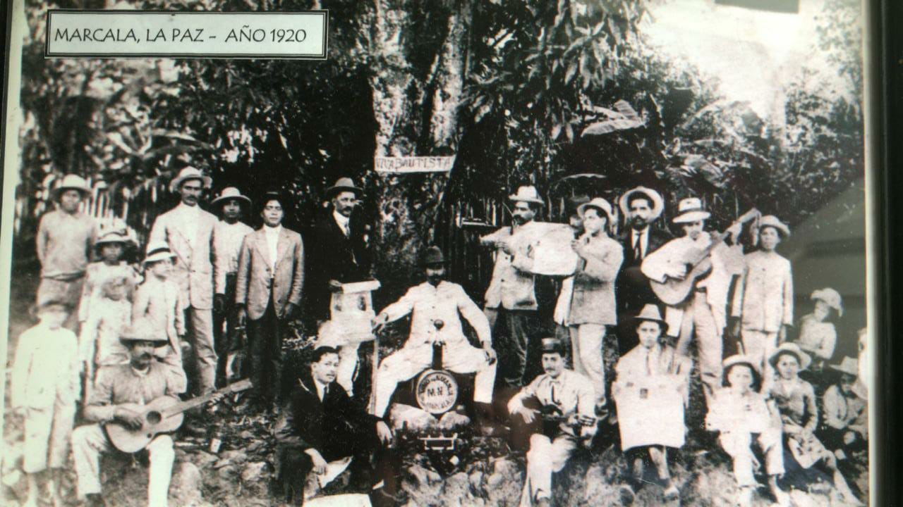
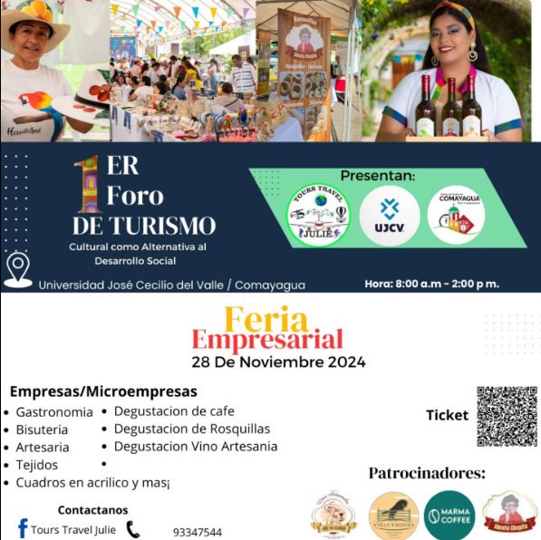

Vino de Nance
El Nance una fruta diminuta y amarillenta, también conocida como changunga, de sabor ácido y aroma fuerte, se convierte en un vino perfecto que refresca el paladar a gusto
Vino de Marañón
Del marañón hacemos uso del seudofruto, este tiene un sabor astringente y al mismo tiempo ácido, pero cuando se maneja el nivel adecuado de azúcar y con el tiempo de fermentación correcto, se convierte en uno de nuestros vinos exquisitos por la explosión de sabor y olor al verterlo en la copa y degustarlo.
Vino de Mamón
El mamón, mamoncillo o quenepa, fruto exótico que con su sabor semiácido y su pulpa traslucida que al complementarlo con el azúcar y reservando por más de un año se convierte en uno de los vinos más exquisitos y favoritos.
Vino de Carambola
La Carambola conocida como fruta estrella o averrhoa, por ser altamente jugosa, con poca fibra y ácida, hace que quienes degustan el vino se sientan seducidas por el sabor ya que es uno de nuestros vinos más suaves y poco dulces.
Vino de Licha
La Licha o Mamón chino, Rambután o Achotillo fruta tropical exótica, su pulpa jugosa y sabor dulce hace que nuestro Vino de Licha tenga un intenso sabor y preserve el aroma del fruto.
Vino de Mora
La mora un pequeño fruto compuesto por varias drupas, que después del proceso de fermentación adquiere una fragancia exquisita y un sabor estupendo donde se mantiene la esencia del fruto. Convirtiéndose así en un vino semidulce dispuesto a complacer paladares exigentes.
Vino de Mandarina
La Mandarina un cítrico que encanta por su color, sabor y aroma… este ya fermentando, con la acidez del fruto y con el toque ideal de azúcar por más de un año se convierte en un vino delicado, exquisito al paladar.
Vino de Mandariovos
Una mezcla perfecta entre mandarina y ovo, este último conocido también como hobo, ciruelo, jocota o jobo. Ambos frutos se mezclan por más de dos años para dar una explosión de sabor
Vino de Carambolapiña
La Carambola conocida como fruta estrella o averrhoa este al mezclarlo con la Piña solidifican su sabor, textura y aroma surgiendo un vino dulce, pero con la llama explosiva en cada copa que degustas.
Vino de Maracuyambola
El Maracuyá, conocida también como granadilla al mezclar con la Carambola conocida como fruta estrella o averrhoa, se fusionan haciendo un detonante de sabor exquisito entre lo ácido y lo dulce. Sin duda que llamar al Maracuyá como fruta de la pasión hace que este vino sea el vino de la energía.
Vino de Tamarindo
El tamarindo o dátil de la India, la detonación de sabor que tiene el fruto al convertirlo en vino, fermentado por más de dos años hace que sea uno de nuestro Vinos con esencia tropical, rico para refrescar. Una delicia para introducirse a la generosidad que tiene la crianza del Vino de Tamarindo.

Una tradición familiar desde 1970
Según la historia familiar, en especial de la voz de mi tía MARTA LIDIA RENAULT, que ahora la atesoro en mi mente y corazón. Se dice que mi bisabuelo emigró de Bet-hala Palestina a Alemania, luego a Belice…
De Belice a Honduras: en Honduras mi bisabuelo Moisés, se quedó en Marcala, ahí se casó con la señorita Mirtala Bonilla, hija de Pedro H. Bonilla, Abogado y Notario de Marcala, quien fue luego presidente de la Corte Suprema de Justicia y Embajador Plenipotenciario ante el pueblo y gobierno de Nicaragua y Diputado por el Departamento de La Paz ante el Congreso Nacional.
Con Mirtala Bonilla tuvo 5 hijos, todos varones, Jacobo y Moisés que fallecieron antes que él y sin dejar hijos. También Juan, Abrahán y Nicolás. Somos de la descendencia de mi abuelo Juan y no mencionaré la cantidad de hijos que tuvo solo diré que tengo muchos tíos. Pero de esa generación esta mi Papá; Juan Pedro Nazar que mi bisabuelo deseó asentarlo con el nombre de Molotov… al ser muy extensivo la mayoría de las personas solo le llamaban Molo… y así es como aqui en la Villa de San Antonio solo se le conoce por Don Molo. Y la historia continua por Don Molo, se casa con doña Carmen Valladares, hija de padres luchadores y una abuela a toda madre que les enseño a trabajar haciendo las mejores rosquillas de ese tiempo… y es la historia que conocemos actualmente y que formamos parte de ella.
Alli en Marcala abrió un licoreria con Jorge Facussé, padre de Miguel Facussé, pero la cerraron ya que se trasladó a TEGUCIGALPA, por ese tiempo era un emporio comercial de granos, bebidas alcohólicas, panaderías, etc. El licor venía a lomo de mula, pero las mulas con su andar cadencioso lo derramaban, no es broma, hasta que llegaron los dos carros, tipo baronesa, dejaban las cajas de Tegus y luego se trasladaban hasta el mineral de Valle de Angeles a dejar abastecido los garrafones de Marco Aurelio Soto, gran beodo y flamante Presidente de Honduras en dos periodos. Y es así como comienza la historia de tener una licorera a producir vinos con los frutos locales…
Así que es cómo surge la idea de Vinos Artesanales Mi madre, posicionando nuestra marca en el mercado hondureño. Vinos Artesanales ¡Mi Madre! preserva una receta familiar que data de 1970, y que mi abuelo elaboraba desde años atrás manteniendo un producto nostálgico y artesanal...
Vinos Artesanales ¡Mi Madre! como futura empresa de este esquicito producto que guarda un legado familiar cobra aún más fuerza cuando unos de los puntos esenciales UNESCO, objetivos de desarrollo sostenible, específicamente el objetivo ocho manifiesta: Promover el crecimiento económico sostenido, inclusivo y sostenible, el empleo pleno y productivo y el trabajo decente para todo, la Meta 8.9 de este mismos informe; trata sobre la necesidad de elaborar y poner en práctica políticas encaminadas a promover un turismo sostenible que cree puestos de trabajo y promueva la cultura y los productos locales.
Actualmente Vinos Artesanales ¡Mi Madre! Tiene 11 sabores disponibles entre ellos; Mamón, Licha, Carambola, Marañón, Nance, Tamarindo, Piña, Carambolapiña, Maracuyambola, Mandarina, Mandariovos, Mora teniendo como meta lanzar entre diciembre y marzo 2022 el sabor Nance. De nuestra gama de sabores decidimos enviar cuatro de los sabores de mayor consumo en nuestra zona. Sin tener a menos el sabor exquisito que tienen los demás.
Regresar al inicio¿Dónde Comprar?
- Restaurante Zazil: Hotel Honduras Maya, Tegucigalpa
- Casa Artesanal: City Mall, Tegucigalpa
- Abuela Chepita: Villa de San Antonio, Comayagua
- Atoles Alejandra: Carretera CA-5
- Chorros Termales Hotel Balneario y Restaurante: Flores, Villa de San Antonio, Comayagua
- Floristeria Danna: Barrio Torondón, Comayagua
- Restaurante La Baranda: Frente a Metro Plaza, Comayagua
- Repostería Kamilles: Haciendo postres y coctelería a base de nuestros vinos artesanales
- Para distribución visita nuestra sección: Contacto
Te invitamos a que sigas consumiendo lo nuestro, Vinos Artesanales ¡Mi Madre!
Ir a ContactoEventos

Primer Foro de Turismo
Vinos Artesanales ¡Mi Madre! estaremos participando en el Primer Foro de Turismo de la ciudad de Comayagua, a realizarse el día 28 de noviembre de 2024 en la Universidad José Cecilio del Valle - 8:00 am a 2:00 pm
Expoferia Navideña
Vinos Artesanales ¡Mi Madre! participó de la gran Expoferia Navideña